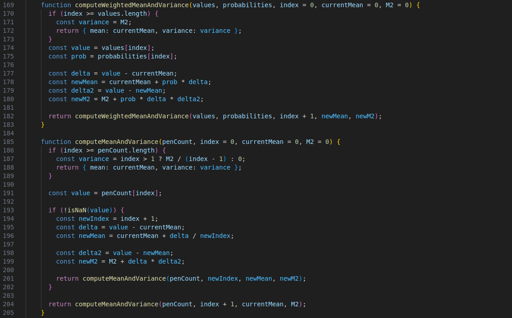

Homework 9
Theorical
Main Properties of Sampling Mean and Variance
Sampling Mean (Sample Mean)
The sample mean is a fundamental concept in statistics, representing the average of a set of data points. To compute it, we sum all the data points in a sample and then divide that sum by the number of points. Mathematically, the sample mean is given by the formula:
\[ \bar{X} = \frac{1}{n} \sum_{i=1}^{n} X_i \]
Here, \( X_i \) represents the individual data points in the sample, and \( n \) is the number of data points. The sample mean is essentially a central value of the data and serves as an estimate of the population mean. It plays a critical role in inferential statistics, where we use sample data to draw conclusions about larger populations.
Sampling Variance
Variance is another key concept in statistics that measures how spread out the data points in a sample are. In other words, it tells us how much the individual data points deviate from the sample mean. The formula for the sample variance is given by:
\[ s^2 = \frac{1}{n-1} \sum_{i=1}^{n} (X_i - \bar{X})^2 \]
In this equation, \( s^2 \) is the sample variance, \( X_i \) are the individual data points, and \( \bar{X} \) is the sample mean. The denominator is \( n-1 \) instead of \( n \) because using \( n-1 \) corrects for bias when estimating the population variance from a sample. The variance provides insight into the variability of the data. A larger variance means the data points are more spread out, while a smaller variance indicates that the data points are clustered around the mean.
Law of Large Numbers (LLN)
The Law of Large Numbers (LLN) is a fundamental theorem in probability theory that states that as the sample size grows, the sample mean will converge to the true population mean. This concept is vital because it assures us that with enough data, our sample-based estimates will be close to the actual values we are trying to measure. The law comes in two main forms: the weak law and the strong law.
The Weak Law of Large Numbers (WLLN) states that the sample mean will converge in probability to the population mean as the sample size increases. In other words, as the sample size grows, the probability that the sample mean deviates significantly from the population mean becomes smaller. On the other hand, the Strong Law of Large Numbers (SLLN) is a more stringent form, stating that the sample mean will almost surely converge to the population mean as the sample size approaches infinity. In both cases, LLN gives us a powerful guarantee that large samples provide increasingly accurate estimates of population parameters.
Illustration of the Law of Large Numbers
Consider a simple example of flipping a fair coin. The true probability of getting heads is 0.5. If you flip the coin only a few times, say 10 flips, the proportion of heads might be far from 0.5, with 7 heads out of 10 flips, for instance. However, as you increase the number of flips—say, to 1000 or even 10,000—the proportion of heads will approach 0.5. This illustrates the Law of Large Numbers: with a small sample, the mean (the proportion of heads) can vary greatly from the true mean, but as the sample size increases, the observed mean converges to the true mean.
Applications of Law of Large Numbers in Cybersecurity
The Law of Large Numbers is not only a theoretical concept but also has practical applications, particularly in fields such as cybersecurity. In cybersecurity, decisions are often made based on observed data, and LLN can help ensure that those decisions become more reliable as more data is collected.
For example, in network traffic analysis, cybersecurity analysts may monitor a subset of network traffic patterns for anomalies, such as unusual login attempts. When the sample size is small, it might be difficult to distinguish between normal fluctuations and actual threats. However, as more traffic data is collected, the sample mean (i.e., the frequency of anomalies) becomes more accurate, making it easier to detect true security threats.
Similarly, intrusion detection systems (IDS) can benefit from LLN. IDS models often rely on historical data to detect potential intrusions or malicious activity. With larger datasets, the model’s predictions become more accurate, as it can better identify patterns of behavior that are indicative of attacks. Over time, as data grows, the system’s ability to distinguish between benign and malicious activity improves.
In risk assessment and vulnerability prediction, cybersecurity teams can use LLN to analyze large datasets of past attacks or vulnerabilities. As the dataset grows, predictions about which vulnerabilities are most likely to be exploited become more reliable. For instance, a team might look at the frequency of attacks on different system configurations. With a small sample, they might see an attack rate of 1% on a particular system, but with a larger sample, they might see that the true rate is closer to 5%, allowing them to prioritize that vulnerability more effectively.
Finally, penetration testers, who simulate attacks on a system to identify weaknesses, also make use of LLN. By testing a representative sample of systems or configurations, they can estimate the overall security posture of an organization. As the sample size increases, their estimates become more accurate, providing a more reliable assessment of the organization’s security.
Practical
Distribution of the sampling average
Sum: 0.00
Mean and Variance Analysis
The average of the distribution of the averages of the samples is very close to the theoretical mean because the samples are generated respecting the parent distribution. Even if the sample size n or the number of samples m changes, this relationship remains valid. For the variance, the relationship is similar but the variance of the sample mean distribution is lower than the variance of the parent distribution. This reduction is due to the fact that the variance of the sample mean decreases with increasing sample size n.
Code Explanation
The only major change in the code compared to the previous homework concerns the generation of the variance distribution. In fact, this time we generate the distribution using the varianceArray array.
